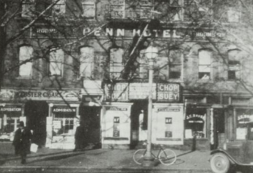

Literature Review
From the 1970s onward, Washington, D.C.’s Chinatown has been the target of intense urban revitalization efforts by the city’s government (Khoo 2). Once a bustling family neighborhood that boasted as many as 800 Chinese residents at its zenith in the 1930s, the derisively nicknamed “Chinablock” now houses approximately 300 Chinese-Americans (Chow 195). The majority of these Chinese residents live in one of two subsidized housing complexes in the Chinatown area. Despite this fact, the majority of the literature surrounding gentrification in Washington’s Chinatown has focused more on the effect urban revitalization efforts have had on Chinese-American business owners, not the actual Chinese residents who rely on the neighborhood’s subsidized housing on a daily basis.
In order to truly understand the impact that gentrification has had on Washington’s Chinatown, it is important to ask the following questions: How have residents of affordable housing in the Chinatown area been affected by downtown urban revitalization efforts? How has the local response to gentrification in Chinatown changed over time? And, perhaps most nebulously, what does it mean to “save Chinatown?” None of these questions are truly answerable until one dives deeper into the history of Washington’s Chinatown -- and more specifically, the history of housing and displacement in Washington’s Chinatown.
A Brief History
In 1820, The United States Immigration Commission reported the arrival of the first Chinese immigrant in the US. By 1852, high demand for cheap labor and the promises of quick riches through the California gold rush attracted as many as 20,000 Chinese immigrants. Many Chinese laborers were willing to work under dangerous conditions for low pay, causing them to take the jobs that white workers rejected. When a national recession in the 1870s worsened unemployment on the West Coast, industrialists and white laborers used the Chinese population as a scapegoat for their economic problems. The anti-Chinese sentiment of the 1870s and 1880s manifested in the angry lynchings and murders of Chinese-Americans and the passage of discriminatory legislation like the 1882 Chinese Exclusion Act, which prohibited the future immigration of Chinese workers. Facing hostility on the West coast, Chinese laborers migrated to various other parts of the country instead, including the capital city of Washington, D.C. (Chow 190).
Federal Triangle

Image: A 1972 Washington Post article detailing the conflict between those in favor of and against the sports arena (via The Washington Post)
In the 1880s, Washington’s first Chinatown developed on Pennsylvania Avenue near 4 ½ Street NW, where John Marshall Park now stands. In 1884, the city’s Chinese population was approximately 100 people, most of whom lived in Chinatown. By 1903, Chinatown had accrued its own drugstores, restaurants, barbershops, tailor shops, mercantile establishments, and fraternal lodges, all while steadily expanding along Pennsylvania Avenue between 3rd and 6th Street NW. However, tragedy struck when federal beautification efforts made plans to demolish Chinatown to make space for the Federal Triangle government complex that would stand in its place. In 1931, without making any provisions for the 398 Chinese residents living in the neighborhood, the city forced the residents to sell their land and relocate (Chow 195).
Fortunately, the On Leong Merchants Association was able to purchase a row of storefronts on 6th and H Street NW and relocate the Chinatown to the new area. From there, the neighborhood continued to expand along H Street, which is where the present-day Chinatown stands (Ashe and Musgrove 426).
Sports Arena
Image: A 1972 Washington Post article detailing the conflict between those in favor of and against the sports arena. The evocative headline "Progress vs. People" suggests that the conflict was solely about economic progress vs. a stagnant, historic community, which wasn't -- and still isn't -- necessarily the case. (via The Washington Post)
On June 8th, 1972, entrepreneur Abe Pollin announced his new hockey team and the transplanted Baltimore Bullets would play in a stadium built in D.C. if he could be assured that the arena would be ready for play in September 1974. This sparked a passionate debate about the construction of a sports arena/convention center in downtown D.C., right in the middle of Chinatown. The Metropolitan Washington Board of Trade, along with other organizations containing the business elite, supported the proposed development and claimed it would increase city revenue by $112 million, create about 3,000 new jobs, and decrease crime in the area. A few Chinese business owners agreed with this argument, eager for the economic activity the new development would bring (Khoo 22).
However, those opposed to the proposal claimed the development would displace the majority of Chinatown residents while destroying the historical heart of the community. As one Washington Post editorial stated at the time, “To destroy the 129 business establishments of Chinatown and furniture row, to say nothing of two active churches, is hardly a way to ‘revitalize’ them.” Through a passionate grassroots campaign that also involved the African American churches and furniture store owners of the area, the residents of Chinatown won a small victory over the sports arena proposal, preventing the demolition of their neighborhood (Khoo 24).
Convention Center
Image: A 1975 "Save Chinatown" banner near 7th St, NW protesting the influx of redevelopment efforts targetting Chinatown. (via Robert Lee and Harry Chow/Eastern Wind, Inc.)
The victory was short-lived; although residents were able to stave off the development of a sports arena that would’ve completely destroyed Chinatown, a convention center was eventually built at 9th and H Street NW in 1983. Although this location had been moved from the heart of Chinatown to prevent substantial residential displacement, the detrimental effects still reverberated throughout the community. Not only had 12% of the area been torn down, but a hundred Chinese families had been displaced in the process. The construction of the convention center launched a series of redevelopment projects that granted the area economic revitalization while gradually displacing the Chinese population (Chow 205).
MCI Center

Image: The MCI Center, circa 2001 (via Wally Gobetz/Flickr)
When Pollin’s sports arena proposal resurfaced in the 1990s, there were fewer protests from the community. The most notable change was that the proposal designated the construction to a mostly empty lot and would not raze any historic buildings. Moreover, the Chinese population in this area had decreased dramatically in the previous years due to the fallout of the 1968 riots and general suburbanization. In 1980, there were only 302 Chinese people living in Chinatown (Ashe and Musgrove 427). Although the arena would’ve increased property values and raised rents for Chinatown residents, there were fewer residents in the neighborhood who had the political clout to protest this development. Furthermore, many members of the Chinese business elite welcomed the arena, seeing it as an opportunity to inject economic revitalization to Chinatown businesses (Khoo 44).
The 20,000 seat MCI Center (later renamed the Verizon Center and now named the Capital One Arena) opened to much fanfare on December 2, 1997, marking an era of rapid downtown redevelopment that primarily focused on the Chinatown area. Chinatown’s economy boomed in the following era -- although how much of that has directly benefited Chinese residents and local business owners is unclear (Ashe and Musgrove 428).
Commodification and Commercialization
Much has been said in the literature about how the commodification of ethnicity in Chinatown has been justified by preservation efforts. Dubbed “D.C.’s only ethnic cultural area” in a 1984 redevelopment plan by the city, Chinatown’s streetscape and architecture have been designed specifically to invoke a sense of ethnic exoticism that will lure tourists in. As Khoo puts it, “This highlighting of Chinatown in the planning documents for D.C. added to the larger global trend in the Anglophone world towards preserving and redeveloping Chinatowns for both political and economic gain” (47). This was not preservation for preservation’s sake, but preservation for profit’s sake.
Historical Nostalgia vs. Living Neighborhood
Image: Construction of the Friendship Archway, the largest Chinese arch in the world (at time of construction). Despite many Chinatown residents' protests of this "communist arch" at the time, it is often seen today as the defining monument of D.C.'s Chinatown.
Much of the activism of the 1970s surrounding the initial sports arena proposal also sparked a conversation around the historic significance of Chinatown. For this reason, there was a push to designate the Chinatown area as a historic district. Movements like this were ultimately motivated by a desire to commodify Chinatown and market it as an ethnically unchanging community that would attract tourists in ways similar to the Chinatowns of San Francisco and New York. More importantly, such movements did not take into consideration the feelings of residents and local business owners in Chinatown. The actual members of the community did not think a designation as a historic district would revitalize the neighborhood; rather, they wanted new developments that would actually benefit the residents, such as a “Chinese Trade and Community Center,” a Chinese library, a nursing home, theaters for Chinese opera and acrobatics, a medical clinic, a vocational training center, and housing (Khoo 36).

Image: Rendering of Wah Luck House, a subsidized housing complex built in 1982 to assist those displaced by construction of the Convention Center. Today, it houses most of the Chinese residents in Chinatown. (via Kaas Wilson Architects)
While those who wanted to designate Chinatown as a historic district felt this way because of “historic nostalgia,” the members of the community recognized that Chinatown was a “living neighborhood” (Khoo 39). This can be seen in other attempts to Orientalize Chinatown while maintaining a historical facade, including the construction of the Friendship Archway in 1986. This arch cost a million dollars to build and is the largest single-span Chinese archway not only in North America but in the world (Chen 97). In a report by the Chinese Consolidated Benevolent Association published in 1984, before the arch had been approved, the organization urges for the landmark’s construction by comparing it to the Wah Luck House, a subsidized housing complex for senior citizens, most of whom are Chinese: “We do not think that, as an apartment building for the elderly, it is appropriate to serve as the symbol of Chinatown… Chinatown needs some streetscape treatments to clearly define its boundaries and identity so that people who come to Chinatown will have a sense of place” (Khoo 61). The fact that an inanimate historic monument is seen as a more proper symbol of Chinatown than an apartment building full of living Chinese immigrants demonstrates the weight that has been placed on historic nostalgia in the recent decades of Chinatown’s history, as well as the sense with which historical preservation has been conflated with ethnic commodification.
Bilingual Signage

Image: A Hooters in Chinatown with signs in both English and Chinese. The mandatory bilingual signage reflects an increasing trend towards the commodification of Chinatown. (via Laura Hayes/Washington City Paper)
There is an unsurprising abundance of literature about the unique linguistic landscape constructed by the bilingual signage of Washington’s Chinatown. The Chinatown Steering Committee and the Office of Planning of the district government have passed ordinances mandating that all stores in the Chinatown area must carry signage in both Chinese and English, which differentiates Washington’s Chinatown from other North American Chinatowns (Lou, 2010). This signage has encapsulated the commodification of ethnicity within Washington’s Chinatown, while demonstrating how little regard the actual residents of Chinatown have been given when designing the neighborhood’s streetscape.
The Chinese signage does not actually serve much utility. The actual Chinese residents of Chinatown, who are primarily low-income residents and senior citizens, do not have the financial means to eat and shop at the big chain businesses that populate the downtown area (Lou, 2012). They are not the target audiences for these businesses, suggesting that the Chinese characters inscribed on these signs serve a more symbolic purpose. The Chineseness of the bilingual signage works as a spectacle meant primarily for the English-speaking tourists and residents, to broadcast the ethnicity and exoticism of the neighborhood. As the Chinatown Design Guidelines of 1989 state, “Signage and Chinese characters are important design elements. Liberal use of Chinese characters in signage and decoration will provide needed Chinese ambiance in Chinatown.” Chinese characters are mentioned purely for their aesthetic purposes. The language has become less a means of communication for the Chinese-speaking residents of Chinatown, and more a symbolic ornament in an increasingly commodified landscape (Leeman and Modan 359).
Affordable Housing Voices
Image: Museum Square, a subsidized housing complex in Chinatown. Although newspapers started writing about the residents' struggle around 2015, more research is needed among the literature to further investigate what can be done to help affordable housing residents in Chinatown. (via Google Streetview)
One common theme throughout the literature was a lack of input from the residents who lived in affordable housing complexes in the Chinatown area. Although Lou (2012), Hathaway and Ho, and the “What makes Chinatown Chinatown?” Story Map all draw from interviews of Chinese senior citizens living in Wah Luck House, there is a distinct lack of input from the residents of Museum Square. This is likely due to the dated nature of these sources, as Museum Square did not reach the public eye until the Washington Post published an article about them in July of 2015. The Story Map does comment on Museum Square, but because it was last updated in 2016, it does not contain the most updated information about the situation. This already is one reason why further research needs to be done concerning the residents of Museum Square. Until one understands the legal struggles experienced by Museum Square residents in recent years, it is impossible to grasp the full impact of redevelopment on the Chinatown area.
Often, when the literature concerning gentrification in Chinatown cites a member of the Chinese-American community in the metropolitan area, the person cited is a business owner who does not actually live in Chinatown or someone who used to live in Chinatown but has since moved out to the suburbs. To be clear, not all researchers try to pass this off as representative of the Chinese community as a whole. Khoo, for example, admits that the records and newspaper articles she consulted in her research did not distinguish between different members of the Chinese community, such as between low-income residents and business owners: “Further research is thus needed to contextualize the tangled voices in the written records” (84). This conflation of different members of the Chinese community together is dangerous because it ignores the voices of those who live in affordable housing, who are primarily low-income residents and senior citizens in the case of Museum Square and Wah Luck House, respectively. These residents are arguably hit the hardest by gentrification.
Suburbanization
While some former residents of Chinatown are fortunate enough to move to the suburbs once displacement occurs, many others do not have the privilege. For example, newly arrived low-income immigrants often cannot afford cars and prefer to live downtown for that reason, since they work long hours in the Chinatown area and cannot afford substantial commute time. Similarly, senior citizens, particularly first-wave Chinese immigrants, prefer to stay in Chinatown because they cannot speak much English and enjoy a higher quality of life when they are able to socialize with others who speak their native language (Chow 205). Some of the literature, particularly Chow and Khoo, frame the decentralization of Chinatown communities as a positive or neutral phenomenon. However, ignoring the fact that many residents of Chinatown, especially those who live in affordable housing, cannot afford to move out to the suburbs glosses over a crucial part of the narrative.
Works Cited
- Asch, Chris Myers, and George Derek Musgrove. “Go Home Rich White People: Washington Becomes Wealthier and Whiter, 1995-2010.” Chocolate City: A History of Race and Democracy in the Nation’s Capital, University of North Carolina Press, 2017, pp. 425–57, https://www-jstor-org.ezproxy.lafayette.edu/stable/10.5149/9781469635873_asch.19?refreqid=excelsior%3Aedeffe71b6286f3ba52f3fc33be10031&seq=1#metadata_info_tab_contents.
- Chen, Fanglan. Thrive or Survive: Evolution and Preservation of Chinatowns in the United States. The University of Georgia, 2015.
- Chow, Esther Ngan-ling. “From Pennsylvannia Avenue to H Street, NW.” Urban Odyssey : A Multicultural History of Washington, D.C., Washington : Smithsonian Institution Press, 1996. Internet Archive, http://archive.org/details/isbn_9781560985457.
- Hathaway, David, and Stephanie Ho. “Small but Resilient: Washington’s Chinatown over the Years.” Washington History, vol. 15, no. 1, Historical Society of Washington, D.C., 2003, pp. 42–61. JSTOR.
- Khoo, Evelyn. Under the Arch of Friendship: Culture, Urban Redevelopment and Symbolic Architecture in D.C. Chinatown, 1970s–1990s. University of Maryland, College Park, 2009, http://search.proquest.com/cv_512939/docview/304924111/abstract/3CEA3391B91F4AAFPQ/1.
- Leeman, Jennifer, and Gabriella Modan. “Commodified Language in Chinatown: A Contextualized Approach to Linguistic Landscape.” Journal of Sociolinguistics, vol. 13, no. 3, Wiley-Blackwell, June 2009, pp. 332–62. EBSCOhost, doi:10.1111/j.1467-9841.2009.00409.x.
- Lou, Jackie Jia. “Chinatown in Washington, DC: The Bilingual Landscape.” World Englishes, vol. 31, no. 1, 2012, pp. 34–47. Wiley Online Library, doi:10.1111/j.1467-971X.2011.01740.x.
- Lou, Jackie Jia. “Chinatown Transformed: Ideology, Power, and Resources in Narrative Place-Making.” Discourse Studies, vol. 12, no. 5, 2010, pp. 625–47. JSTOR.
- Lui, Mary Ting Yi. “Race and Disease in Urban Geography.” Reviews in American History, edited by Nayan Shah, vol. 30, no. 3, Johns Hopkins University Press, 2002, pp. 453–62. JSTOR.
- What Makes Chinatown Chinatown? Talking about Change in Washington, D.C. May 2016. www.arcgis.com, https://www.arcgis.com/apps/MapJournal/index.html?appid=58e8e61240cc475497f0e4d0f45783fa.